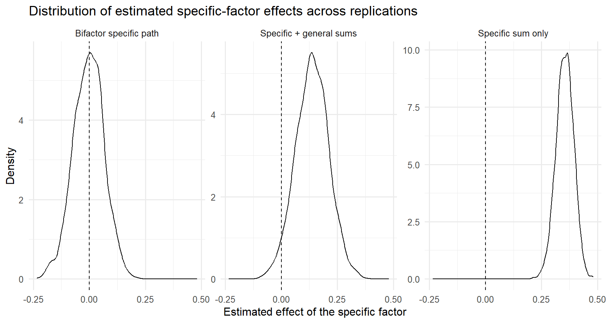

Distinctiveness, interpretability, and predictive validity
Is the narrow factor still interpretable and useful after the broad/common variance is modeled?
Warning
This deck of slides possibly invalidates many specific findings in the literature. BUT not being able to validate/measure a construct reliably, does not mean your theory is wrong, don’t worry…you just can’t test or study it.
By the end, students should be able to:
Examples you will see in applied work:
These are not just “more factors”.
They are claims that a narrow construct remains meaningful (identifiable) once broader variance is present.
Instead of asking:
“Does the subscale exist?”
Ask three separate questions:
Structural distinctiveness
Is there evidence for separable narrow variance once the broad factor is modeled?
Interpretability
Is that narrow factor well-defined enough to discuss substantively?
Criterion validity
Does it predict anything important above the broad factor?
Note
We’ll see that above the broad factor is not such an easy question to tackle, if you really want to tackle it.
Does math anxiety predict math performance above general anxiety?
That single sentence hides several different models and several different validity claims.
We need to ask:
Common shortcut
The problem
That workflow often confuses:
A model can fit well and still fail the question that matters here:
Is the specific factor interpretable and worth using?
For this topic, always separate:
1. Correlated first-order factors
Broad overlap is represented through factor correlations.
2. Higher-order model
A broad factor explains the correlations among first-order factors.
3. Symmetrical bifactor model
All items load on a general factor and on one group factor.
4. Bifactor(S-1)
A theoretically chosen reference domain defines the general factor; other domains become specific residual factors.
| Model | Broad variance | Narrow variance | Typical attraction | Main danger |
|---|---|---|---|---|
| Correlated factors | factor correlations | first-order factors | simple, familiar | “unique” meaning may be overstated |
| Higher-order | higher-order factor | first-order residualized on higher-order | broad vs domains | first-order meaning changes after higher-order layer |
| Bifactor | general factor on all items | orthogonal group factors | direct separation of common vs specific | overinterpretation, instability, identifiability problems |
| Bifactor(S-1) | reference-domain-defined general factor | residual domains | often more interpretable | requires strong theory and explicit reference choice |
A defensible specific factor usually needs all of the following:
A “specific factor” is often residualized variance.
That can be scientifically meaningful.
But it can also be:
So the substantive question is not “is it significant?”
It is “what does this remainder represent?”
A common workflow is:
This looks intuitive, but it can be misleading when:
Important
All specific factors are strongly correlated with general factors and share common variance that can be explained by the broader factor.
Latent-variable models can help because they allow you to:
But SEM does not magically solve poor theory or weak indicators.
Prefer:
“The residual narrow factor showed limited support and should be interpreted cautiously.”
or
“After modeling the broad factor, the specific factor retained interpretable variance and showed a modest latent association with the criterion.”
Avoid:
“The subscale demonstrated clear unique validity.”
unless the evidence is unusually strong and consistent.
# Observed items
anx1 = .80*general_anxiety + rnorm(N)
anx2 = .80*general_anxiety + rnorm(N)
anx3 = .80*general_anxiety + rnorm(N)
anx4 = .80*general_anxiety + rnorm(N)
manx1 = .65*general_anxiety + .35*math_anxiety + rnorm(N)
manx2 = .65*general_anxiety + .35*math_anxiety + rnorm(N)
manx3 = .65*general_anxiety + .35*math_anxiety + rnorm(N)
manx4 = .65*general_anxiety + .35*math_anxiety + rnorm(N)mod_class <- '
math_anx =~ manx1 + manx2 + manx3 + manx4
'
fit <- cfa(mod_class, data = dat)
fitmeasures(fit, fit.measures = c("cfi","tli","rmsea","srmr")) cfi tli rmsea srmr
1.000 1.001 0.000 0.008 lhs op rhs est se std.lv std.all
1 math_anx =~ manx1 1.000 0.000 0.849 0.642
2 math_anx =~ manx2 0.926 0.065 0.786 0.612
3 math_anx =~ manx3 1.029 0.069 0.873 0.685
4 math_anx =~ manx4 1.001 0.068 0.850 0.653
5 manx1 ~~ manx1 1.028 0.061 1.028 0.588
6 manx2 ~~ manx2 1.031 0.059 1.031 0.625
7 manx3 ~~ manx3 0.863 0.057 0.863 0.531
8 manx4 ~~ manx4 0.970 0.059 0.970 0.573
9 math_anx ~~ math_anx 0.720 0.075 1.000 1.000We would conclude our measure is valid as it shows perfect fit indices and high and equal loadings across all items
BUT WE ALSO COLLECTED DATA ON ‘ANXIETY’ IN GENERAL…a higher-order factor!
mod_cf <- '
math_anx =~ manx1 + manx2 + manx3 + manx4
gen_anx =~ anx1 + anx2 + anx3 + anx4
math_anx ~~ gen_anx
'
fit_cf <- sem(mod_cf, data = dat)
fitmeasures(fit_cf, fit.measures = c("cfi","tli","rmsea","srmr")) cfi tli rmsea srmr
0.999 0.999 0.011 0.015 lhs op rhs est se std.lv std.all
1 math_anx =~ manx1 1.000 0.000 0.839 0.635
2 math_anx =~ manx2 0.978 0.061 0.821 0.639
3 math_anx =~ manx3 1.032 0.061 0.865 0.679
4 math_anx =~ manx4 0.992 0.062 0.832 0.640
5 gen_anx =~ anx1 1.000 0.000 0.822 0.646
6 gen_anx =~ anx2 0.927 0.059 0.762 0.618
7 gen_anx =~ anx3 0.994 0.061 0.817 0.643
8 gen_anx =~ anx4 0.906 0.060 0.745 0.586
9 math_anx ~~ gen_anx 0.636 0.049 0.922 0.922
10 manx1 ~~ manx1 1.044 0.055 1.044 0.597
11 manx2 ~~ manx2 0.974 0.052 0.974 0.591
12 manx3 ~~ manx3 0.877 0.049 0.877 0.539
13 manx4 ~~ manx4 1.000 0.053 1.000 0.591
14 anx1 ~~ anx1 0.942 0.051 0.942 0.582
15 anx2 ~~ anx2 0.940 0.049 0.940 0.618
16 anx3 ~~ anx3 0.949 0.051 0.949 0.587
17 anx4 ~~ anx4 1.063 0.054 1.063 0.657
18 math_anx ~~ math_anx 0.704 0.069 1.000 1.000
19 gen_anx ~~ gen_anx 0.676 0.066 1.000 1.000mod_ho <- '
math_anx =~ manx1 + manx2 + manx3 + manx4
gen_anx =~ anx1 + anx2 + anx3 + anx4 + math_anx
'
fit_ho <- sem(mod_ho, data = dat)
fitmeasures(fit_ho, fit.measures = c("cfi","tli","rmsea","srmr")) cfi tli rmsea srmr
0.999 0.999 0.011 0.015 lhs op rhs est se std.lv std.all
1 math_anx =~ manx1 1.000 0.000 0.839 0.635
2 math_anx =~ manx2 0.978 0.061 0.821 0.639
3 math_anx =~ manx3 1.032 0.061 0.865 0.679
4 math_anx =~ manx4 0.992 0.062 0.832 0.640
5 gen_anx =~ anx1 1.000 0.000 0.822 0.646
6 gen_anx =~ anx2 0.927 0.059 0.762 0.618
7 gen_anx =~ anx3 0.994 0.061 0.817 0.643
8 gen_anx =~ anx4 0.906 0.060 0.745 0.586
9 gen_anx =~ math_anx 0.941 0.063 0.922 0.922
10 manx1 ~~ manx1 1.044 0.055 1.044 0.597
11 manx2 ~~ manx2 0.974 0.052 0.974 0.591
12 manx3 ~~ manx3 0.877 0.049 0.877 0.539
13 manx4 ~~ manx4 1.000 0.053 1.000 0.591
14 anx1 ~~ anx1 0.942 0.051 0.942 0.582
15 anx2 ~~ anx2 0.940 0.049 0.940 0.618
16 anx3 ~~ anx3 0.949 0.051 0.949 0.587
17 anx4 ~~ anx4 1.063 0.054 1.063 0.657
18 math_anx ~~ math_anx 0.105 0.029 0.149 0.149
19 gen_anx ~~ gen_anx 0.676 0.066 1.000 1.000mod_bi <- '
math_anx =~ manx1 + manx2 + manx3 + manx4
gen_anx =~ anx1 + anx2 + anx3 + anx4 + manx1 + manx2 + manx3 + manx4
gen_anx ~~ 0*math_anx
'
fit_bi <- sem(mod_bi, data = dat)
fitmeasures(fit_bi, fit.measures = c("cfi","tli","rmsea","srmr")) cfi tli rmsea srmr
1.000 1.000 0.000 0.012 lhs op rhs est se std.lv std.all
1 math_anx =~ manx1 1.000 0.000 0.352 0.266
2 math_anx =~ manx2 0.467 0.231 0.165 0.128
3 math_anx =~ manx3 1.002 0.328 0.353 0.277
4 math_anx =~ manx4 1.230 0.438 0.433 0.333
5 gen_anx =~ anx1 1.000 0.000 0.824 0.647
6 gen_anx =~ anx2 0.925 0.059 0.762 0.618
7 gen_anx =~ anx3 0.988 0.061 0.814 0.640
8 gen_anx =~ anx4 0.906 0.060 0.746 0.586
9 gen_anx =~ manx1 0.931 0.065 0.767 0.580
10 gen_anx =~ manx2 0.960 0.064 0.791 0.616
11 gen_anx =~ manx3 0.964 0.063 0.794 0.622
12 gen_anx =~ manx4 0.910 0.064 0.749 0.576
13 math_anx ~~ gen_anx 0.000 0.000 0.000 0.000
14 manx1 ~~ manx1 1.036 0.063 1.036 0.593
15 manx2 ~~ manx2 0.995 0.051 0.995 0.604
16 manx3 ~~ manx3 0.871 0.058 0.871 0.536
17 manx4 ~~ manx4 0.943 0.078 0.943 0.557
18 anx1 ~~ anx1 0.940 0.051 0.940 0.581
19 anx2 ~~ anx2 0.940 0.049 0.940 0.618
20 anx3 ~~ anx3 0.954 0.051 0.954 0.590
21 anx4 ~~ anx4 1.061 0.054 1.061 0.656
22 math_anx ~~ math_anx 0.124 0.060 1.000 1.000
23 gen_anx ~~ gen_anx 0.678 0.066 1.000 1.000Do not ask only “which model fits best?”
Also compare:
For broad vs specific claims, add checks such as:
A specific factor with low determinacy or weak replicability is hard to interpret, even if global fit looks good.
# After extracting standardized loadings / residual variances,
# inspect indices such as omega hierarchical, omega subscale,
# ECV, PUC, H, and factor determinacy.
library(BifactorIndicesCalculator)
bifactorIndices(fit_bi)$ModelLevelIndices
ECV.gen_anx PUC Omega.gen_anx OmegaH.gen_anx
0.9157073 0.7857143 0.8401305 0.8060378
$FactorLevelIndices
ECV_SS ECV_SG ECV_GS Omega OmegaH H FD
math_anx 0.1609079 0.08429275 0.8390921 0.7465064 0.1117941 0.2314392 0.4835506
gen_anx 0.9157073 0.91570725 0.9157073 0.8401305 0.8060378 0.8277219 0.9011336
$ItemLevelIndices
IECV
manx1 0.8256587
manx2 0.9584576
manx3 0.8347653
manx4 0.7492171
anx1 1.0000000
anx2 1.0000000
anx3 1.0000000
anx4 1.0000000 lhs op rhs est se std.lv std.all
5 math_performance ~ math_anx 0.342 0.047 0.288 0.272
Call:
lm(formula = math_performance ~ mat_anx, data = dat)
Residuals:
Min 1Q Median 3Q Max
-3.15021 -0.72446 0.01687 0.70175 3.01907
Coefficients:
Estimate Std. Error t value Pr(>|t|)
(Intercept) 0.02053 0.03263 0.629 0.529
mat_anx 0.25212 0.03351 7.523 1.19e-13 ***
---
Signif. codes: 0 '***' 0.001 '**' 0.01 '*' 0.05 '.' 0.1 ' ' 1
Residual standard error: 1.032 on 998 degrees of freedom
Multiple R-squared: 0.05366, Adjusted R-squared: 0.05271
F-statistic: 56.59 on 1 and 998 DF, p-value: 1.194e-13We would conclude our measure is a good predictor of math performance, but is it for real?
…we know from the data generating model that it should not be! Isn’t it?
lhs op rhs est se std.lv std.all
10 math_performance ~ math_anx -0.126 0.246 -0.105 -0.100
11 math_performance ~ gen_anx 0.519 0.254 0.425 0.401
Call:
lm(formula = math_performance ~ mat_anx + anxiety, data = dat)
Residuals:
Min 1Q Median 3Q Max
-3.15389 -0.72012 0.01263 0.71534 2.85762
Coefficients:
Estimate Std. Error t value Pr(>|t|)
(Intercept) 0.02606 0.03230 0.807 0.4199
mat_anx 0.10840 0.04486 2.416 0.0159 *
anxiety 0.22371 0.04704 4.756 2.26e-06 ***
---
Signif. codes: 0 '***' 0.001 '**' 0.01 '*' 0.05 '.' 0.1 ' ' 1
Residual standard error: 1.021 on 997 degrees of freedom
Multiple R-squared: 0.07466, Adjusted R-squared: 0.0728
F-statistic: 40.22 on 2 and 997 DF, p-value: < 2.2e-16What’s going on here? Why do sum scores suggest both factors have an effect?
lhs op rhs est se std.lv std.all
14 math_performance ~ math_anx 0.064 0.197 0.023 0.022
15 math_performance ~ gen_anx 0.383 0.049 0.314 0.297| model | mean_estimate | sd_estimate | prop_significant |
|---|---|---|---|
| Bifactor specific path | -0.004 | 0.068 | 0.059 |
| Specific + general sums | 0.137 | 0.073 | 0.452 |
| Specific sum only | 0.354 | 0.039 | 1.000 |

Well, everything applies to all contexts. You cannot just control for intelligence using the Raven matrices…you should model intelligence as a general latent factor and test whether your specific executive funtion measures, visuo-spatial abilities, creative skills predict the desired outcome beyond the latent g factor.
This is well known in literature…but we always ignore it (Westfall & Yarkoni, 2016)
| Question | If “no” | Consequence |
|---|---|---|
| Is the specific factor theoretically motivated? | weak theory | do not over-interpret |
| Are estimates admissible and stable? | improper / unstable | stop and rethink model |
| Is the specific factor well-defined? | weak loadings / low determinacy | avoid strong substantive claims |
| Does it add latent predictive information? | null / fragile effects | no evidence for unique criterion value |
| Is the gain practically meaningful? | trivial improvement | probably not worth using |
Specific factors are not automatically meaningful
Good fit is not enough.
Interpretability comes before prediction claims
First ask whether the factor is well-defined.
Incremental validity must be modeled carefully
Measurement error, parameterization, and out-of-sample performance all matter.
Take a scale with a plausible broad+narrow structure from your own area.
Write down what the “specific factor” would mean after broad variance is removed.
Fit at least two plausible measurement models.
Compare not just fit, but the meaning of the narrow factor.
Test one criterion relation.
Ask whether the conclusion is robust across models.
If you use observed scores, add a cross-validated prediction comparison.
Minimum reporting before claiming “specific-factor validity”: